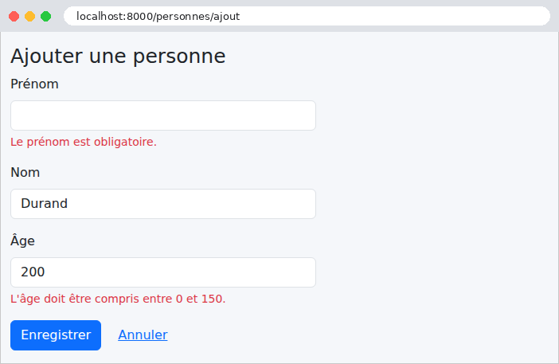
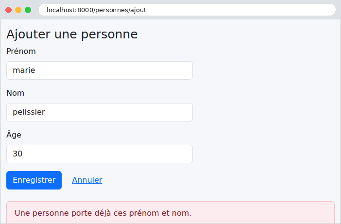
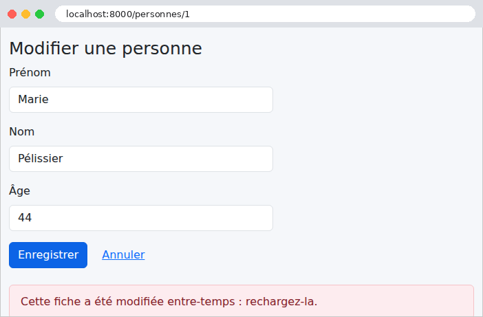
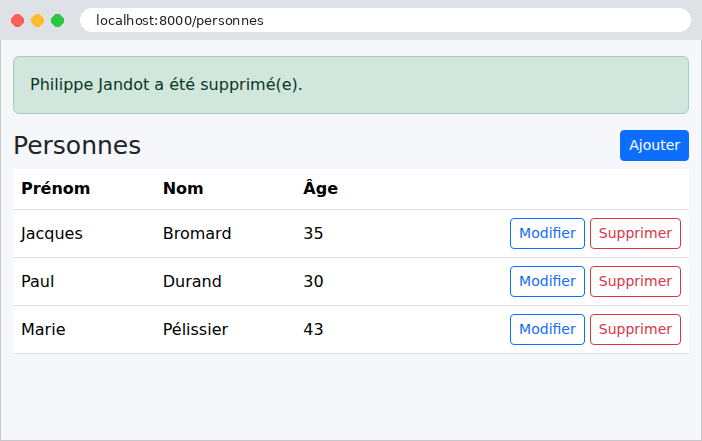

9. Architecture en couches et accès aux données
Les exemples précédents gardaient leurs données en mémoire. Une vraie application les garde dans une base de données, et s'organise en couches (cf. schéma de l'introduction) :
- la couche web (vues, formulaires, gabarits) : lire la requête, appeler la couche métier, choisir le gabarit ;
- la couche métier : les règles de gestion ;
- la couche DAO (Data Access Object) : les requêtes à la base de données.
Chaque couche ne connaît que la couche du dessous, et le moins possible de ses détails : la couche web ignore les requêtes, la couche métier ignore le HTML. Cette séparation rend chaque couche plus simple à comprendre, à tester et à faire évoluer. L'exemple 28 l'applique à la gestion d'une liste de personnes : c'est, en plus petit, la gestion des médecins et des clients de l'étude de cas.
En [Python], l'accès à une base de données repose sur plusieurs étages :
- la norme DB-API 2.0 (PEP 249) de [Python] définit une interface commune à tous les SGBD : ouvrir une connexion, obtenir un curseur, exécuter un ordre SQL, lire les lignes. Chaque SGBD a son pilote : pour [MySQL] (et [MariaDB]), [Django] recommande [mysqlclient], une bibliothèque écrite en C, installée par le fichier [requirements.txt] des exemples ;
- l'ORM (Object-Relational Mapper) de [Django] fait correspondre des classes, les modèles, aux tables de la base, et transforme les lignes lues en objets. Il gère les connexions et les transactions, fabrique lui-même les ordres SQL, adaptés à chaque SGBD, et traduit les erreurs de chaque pilote en exceptions communes (une violation de contrainte d'unicité devient une [IntegrityError], quel que soit le SGBD). Il suit le modèle dit Active Record : chaque objet sait s'enregistrer ([personne.save()]) et se supprimer ([personne.delete()]), et chaque classe a un gestionnaire ([Personne.objects]) d'où partent les requêtes. C'est le modèle d'[Eloquent], l'ORM de [Laravel] ; [Doctrine], l'ORM de [Symfony], suivait au contraire le modèle Data Mapper, où un objet à part lit et enregistre les entités.
L'ORM de [Django] fait partie de [Django], et c'est l'une de ses pièces maîtresses : l'interface d'administration, l'application d'authentification, les sessions en base, les vues génériques reposent sur lui. C'est l'équivalent de [JPA] et [Hibernate] en [Java], d'[Entity Framework Core] en [C#], ou de [SQLAlchemy] (utilisé avec [Flask]) en [Python]. Remarquons une conséquence du fonctionnement de [Django] : par défaut, chaque requête ouvre sa connexion à la base (à sa première requête SQL), et la ferme en se terminant (sur le signal [request_finished], exemple 24). Le réglage [CONN_MAX_AGE] permet de garder les connexions ouvertes d'une requête à l'autre (des connexions persistantes), et [Django] 5.1 a ajouté, pour [PostgreSQL], un véritable pool de connexions. Ouvrir une connexion à [MySQL] sur la même machine ne prend d'ailleurs que quelques millisecondes.
L'exemple nécessite un serveur [MySQL] 8.4 ou plus récent (ou [MariaDB] 10.11 ou plus récent, les versions minimales de [Django] 6.1) en fonctionnement : l'annexe explique comment en installer un avec [Laragon].
9.1. Exemple 28 : une gestion de personnes en trois couches
9.1.1. La base de données
La base [dbpersonnes] est créée par un script SQL. Avec [Laragon], on l'exécute par exemple dans l'outil [HeidiSQL] (menu Fichier / Exécuter un fichier SQL), ou en ligne de commande, depuis le dossier de l'exemple :
Le fichier [database/dbpersonnes.sql] :
- ligne 3 : le script est écrit en [UTF-8] : on l'indique au serveur, pour que les accents des données ([Pélissier]) arrivent intacts ;
- ligne 5 : le jeu de caractères [utf8mb4] accepte tous les caractères (accents, emojis...). La collation [utf8mb4_unicode_ci] compare les chaînes sans tenir compte des majuscules ni des accents : pour [MySQL], [pelissier] et [Pélissier] sont égaux ;
- ligne 11 : un numéro de version, augmenté à chaque modification de la ligne (cf. verrou optimiste, plus bas) ;
- ligne 17 : une contrainte d'unicité nommée : la base refuse deux personnes de mêmes prénom et nom.
[Django] sait aussi créer les tables lui-même, à partir des modèles, par des migrations : des fichiers [Python] qui décrivent, étape par étape, la création et les modifications de chaque table. La commande [python manage.py makemigrations] les écrit, en comparant les modèles à l'état décrit par les migrations précédentes ; [python manage.py migrate] les applique à la base. C'est la façon ordinaire de travailler avec [Django]. Nous gardons un script SQL, commun à toutes les versions de l'étude de cas, et qui montre exactement ce que contient la base. À l'inverse, la commande [python manage.py inspectdb] écrit les modèles d'une base existante : un bon point de départ, à relire.
9.1.2. La configuration : config/settings.py
- lignes 21-26 : les middlewares de l'exemple 21 : la protection anti-CSRF, les messages flash, et la simulation des méthodes PUT et DELETE (le fichier [config/middleware.py] est celui de l'exemple 21) ;
- lignes 32-42 : le réglage [DATABASES] décrit les bases de données de l'application : ici une seule, la base [default]. [ENGINE] désigne le moteur de [Django] pour [MySQL] (qui utilise le pilote [mysqlclient]) ; viennent ensuite le nom de la base, l'utilisateur et son mot de passe (vide, avec les réglages de [Laragon] : si votre serveur a un mot de passe, écrivez-le ici), la machine et le port. [OPTIONS] passe au pilote le jeu de caractères du dialogue avec le serveur, celui de la base ;
- lignes 44-55 : les gabarits, avec [APP_DIRS] pour les gabarits des formulaires (exemple 18), et le processeur de contexte des messages (exemple 20) ;
- lignes 67-74 : le réglage [LOGGING] configure le journal de [Python] (le module [logging]), que [Django] utilise pour ses messages. Il suit le format du module [logging.config] : des destinations ([handlers] : ici la console, par un [StreamHandler], qui écrit sur la sortie d'erreur), et des journaux ([loggers]), désignés par leur nom. Le journal [django.db.backends] reçoit, en mode debug seulement, chaque ordre SQL envoyé à la base, avec sa durée : nous l'envoyons à la console, au niveau [DEBUG] (le plus détaillé). [disable_existing_loggers: False] garde les journaux que [Django] configure lui-même.
Il n'y a rien d'autre à configurer : les modules des trois couches s'importent l'un l'autre (la couche web importe la couche métier, qui importe la couche DAO), et l'ORM ouvre lui-même la connexion à la base, quand il en a besoin.
9.1.3. Le modèle Personne : personnes/models.py
Le fichier s'appelle [models.py] : c'est là que [Django] cherche les modèles d'une application déclarée dans [INSTALLED_APPS].
- ligne 8 : un modèle est une classe qui hérite de [models.Model] ;
- ligne 10 : la clé primaire, générée par la base ([AutoField] : l'[AUTO_INCREMENT] de [MySQL]). [Django] l'ajouterait de lui-même si elle n'était pas déclarée (un champ [id], du type choisi par le réglage [DEFAULT_AUTO_FIELD]) ; nous l'écrivons pour la clarté. Elle vaut [None] tant que l'objet n'a pas été inséré ;
- ligne 12 : la version de la ligne. L'ORM de [Django] n'a pas de verrou optimiste intégré : c'est la couche DAO qui l'écrit (voir plus loin) ;
- lignes 14-16 : les colonnes. Chaque attribut de classe qui est un champ du modèle ([models.XxxField]) correspond à la colonne de même nom ; le type de la colonne est déduit du type du champ ([CharField] : [VARCHAR], de longueur [max_length] ; [IntegerField] : [INT]). Comme dans un formulaire (exemple 08), les champs sont déclarés comme des attributs de la classe, mais ce ne sont pas les mêmes champs : ceux de [django.db.models] décrivent des colonnes, ceux de [django.forms] des champs de formulaire ;
- lignes 19-25 : la classe intérieure [Meta] donne les informations sur le modèle lui-même. [db_table] : le nom de la table ([Django] prendrait sinon le nom de l'application suivi de celui du modèle, [personnes_personne]). [managed = False] : la table existe déjà, et [Django] ne la gère pas : [makemigrations] ne produira pour elle aucune migration de création ou de modification. [ordering] : l'ordre des lignes quand une requête n'en précise pas ;
- lignes 28-29 : la méthode [__str__] (exemple 12) donne le texte qui représente l'objet : [str(p)], ou [{p}] dans une f-chaîne, rend [Marie Pélissier].
Un modèle est une classe ordinaire, à laquelle on peut ajouter des méthodes et des propriétés. L'ORM, lui, remplit les attributs à partir des lignes lues, et fabrique les ordres SQL à partir des attributs.
9.1.4. La couche DAO : personnes/dao.py
La couche DAO ne contient que des requêtes, sans aucune règle de gestion. Chaque fonction commence par [Personne.objects], le gestionnaire du modèle, d'où partent toutes les requêtes.
- lignes 11-12 : [all()] rend un [QuerySet] : un objet qui décrit une requête, sans l'exécuter. La requête n'est envoyée à la base que lorsqu'on a besoin de ses résultats (ici, quand [list] les parcourt) : on dit qu'un [QuerySet] est paresseux. On peut ainsi le compléter avant son exécution ([filter], [exclude], [order_by]...), chaque méthode rendant un nouveau [QuerySet]. L'ordre est celui de [Meta.ordering] ;
- lignes 16-17 : [filter(id=id)] ajoute la condition [WHERE id = ...] ; [first()] exécute la requête, limitée à une ligne ([LIMIT 1]), et rend le premier objet, ou [None]. ([Personne.objects.get(id=id)] rendrait l'objet, mais lèverait l'exception [Personne.DoesNotExist] s'il n'existait pas, et le raccourci [get_object_or_404], exemple 03, une erreur 404) ;
- lignes 22-23 : plusieurs conditions dans [filter] sont réunies par [AND] ; [exclude] ajoute une condition [NOT]. Les paramètres nommés désignent les champs ([prenom=...]) ; des suffixes précisent la comparaison : [age__gte=18] ([>=]), [nom__startswith="P"], [nom__iexact=...] (sans tenir compte des majuscules)... Les valeurs sont transmises à la base à part, et jamais recopiées dans le texte de l'ordre SQL, ce qui rend impossible l'injection SQL ;
- lignes 27-28 : [create] construit l'objet et l'enregistre ([INSERT]) ; après l'insertion, l'ORM range dans l'objet l'id généré par la base. C'est l'équivalent de [p = Personne(prenom=..., ...)] suivi de [p.save()] ;
- lignes 35-38 : la modification, avec son verrou optimiste. [update] modifie en une fois, par un seul ordre [UPDATE], toutes les lignes que désigne le [QuerySet], et rend le nombre de lignes modifiées. Le filtre porte deux conditions : l'id, et la version lue. Si une autre requête a modifié la ligne entre-temps, sa version a changé, l'[UPDATE] ne modifie aucune ligne, et la fonction rend [False]. C'est le principe du verrou optimiste : on ne bloque rien, mais on détecte les modifications concurrentes. L'expression [F("version") + 1] désigne la colonne elle-même, dans l'ordre SQL ([version = version + 1]) : le calcul est fait par la base, et non en [Python] à partir d'une valeur lue plus tôt ;
- lignes 42-43 : la suppression : [delete()] envoie le [DELETE] de la ligne de l'objet.
L'ORM de [Django] n'a pas, comme [Doctrine], de gestionnaire qui compare chaque objet lu à son état d'origine pour n'enregistrer que les colonnes modifiées : [save()] réécrit toutes les colonnes de l'objet (ou celles de son paramètre [update_fields]). C'est plus simple, et plus prévisible ; [update] permet d'écrire exactement l'ordre voulu.
9.1.5. La couche métier : personnes/metier.py
- lignes 12-14 : les messages des règles de gestion ;
- lignes 18-19 : une classe d'exception propre à la couche métier : une règle de gestion refuse l'opération, et le message de l'exception est destiné à l'utilisateur. Elle hérite d'[Exception], sans rien y ajouter : seul son nom compte ;
- lignes 23-27 : les données d'une personne, telles que la couche web les transmet à la couche métier : un objet simple, sans lien avec [Django] ;
- lignes 34-38 : une personne inexistante est une erreur métier ;
- lignes 44-52 : la règle n° 1 : pas deux personnes de mêmes prénom et nom. La règle est vérifiée avant d'écrire, et une [MetierErreur] est levée si elle n'est pas respectée. Mais cette vérification ne suffit pas : deux requêtes simultanées pourraient vérifier toutes les deux qu'il n'y a pas d'homonyme, puis insérer toutes les deux. La contrainte d'unicité de la base refuse alors le second [INSERT], et l'ORM lève une [IntegrityError], transformée en la même [MetierErreur]. La base est le dernier rempart. [raise ... from e] attache l'exception d'origine à la nouvelle : le journal montrera les deux ;
- lignes 55-70 : la règle n° 2 : on ne modifie pas une fiche qui a été modifiée entre-temps par quelqu'un d'autre. Le formulaire de modification transporte la version de la fiche lue (dans un champ caché) ; si elle diffère de la version actuelle, la fiche a changé depuis son affichage. Il reste le cas où la modification concurrente a lieu entre la lecture de la ligne 58 et l'enregistrement de la ligne 66 : c'est le verrou optimiste de la couche DAO qui le détecte. La fonction relit ensuite la personne, pour la rendre avec sa nouvelle version ;
- lignes 73-77 : la suppression rend la personne supprimée, pour le message de confirmation.
Chaque opération qui écrit est exécutée dans une transaction : [transaction.atomic()], utilisé par [with] (un gestionnaire de contexte, exemple 20), ouvre une transaction ([BEGIN]) au début du bloc ; si le bloc se termine normalement (même par un [return]), la transaction est validée ([COMMIT]) ; si une exception sort du bloc, elle est annulée ([ROLLBACK]) : aucune des modifications faites dans le bloc n'est conservée, et l'exception poursuit son chemin. [transaction.atomic] s'emploie aussi comme décorateur, pour une fonction entière ([@transaction.atomic]). La couche métier décide ainsi de l'étendue des transactions : une opération métier, une transaction. Hors d'un bloc [atomic], l'ORM travaille en mode « autocommit » : chaque ordre SQL est validé aussitôt. Une [IntegrityError] est interceptée hors du bloc [with] : à l'intérieur, la transaction ne serait plus utilisable après l'erreur. Les autres exceptions (une panne de la base, une erreur de programmation) ne sont pas des erreurs métier : elles poursuivent leur chemin.
9.1.6. La couche web
La saisie est décrite par un formulaire (exemple 19) :
- lignes 9-17 : les champs et leurs contraintes, avec des messages en français ;
- lignes 20-26 : un paramètre de plus pour le constructeur, [modification], donné par son nom ([PersonneForm(request.POST, modification=True)]) : un paramètre écrit après [*args] ne peut être passé que par son nom. Le formulaire de modification reçoit un champ de plus, la version, dans un champ caché : [self.fields] est un dictionnaire, auquel on peut ajouter un champ ;
- lignes 30-32 : les données validées, sous la forme attendue par la couche métier.
[Django] sait aussi fabriquer un formulaire à partir d'un modèle (la classe [forms.ModelForm]) : ses champs et leurs contraintes sont déduits des colonnes, et sa méthode [save()] enregistre l'objet. C'est très répandu. Mais le formulaire modifierait alors le modèle avant que la couche métier ait vérifié ses règles. Un formulaire distinct garde les couches séparées : la couche web ne transmet à la couche métier que des données validées.
- ligne 8 : la couche métier, seule couche connue de la couche web ;
- lignes 25-40 : l'ajout, en trois temps : la validation du formulaire (les erreurs de saisie, exemple 19) ; l'appel de la couche métier (les règles de gestion) ; puis le schéma PRG, avec un message flash de succès (exemple 20). Une [MetierErreur] réaffiche le formulaire, avec la saisie, et le message de l'exception ([str(e)]), que le gabarit affichera en bas de page. Les erreurs de saisie et les erreurs métier sont ainsi traitées de la même façon ;
- lignes 44-54 : le formulaire de modification, pré-rempli avec la personne lue (paramètre [initial], exemple 18). Une personne inexistante renvoie à la liste, avec un message flash d'erreur ([messages.error]). Le formulaire est envoyé par la méthode PUT (le champ caché [_method], exemple 21), à l'URL [/personnes/<id>] ([reverse], avec les paramètres de la route dans [args]) ;
- lignes 58-78 : la vue de [/personnes/<id>], pour les méthodes PUT (la modification, sur le même modèle que l'ajout) et DELETE (la suppression, protégée par le jeton anti-CSRF, exemple 21). Pour la suppression, il n'y a pas de formulaire à réafficher : l'erreur éventuelle voyage elle aussi dans un message flash ;
- lignes 83-86 : la page du formulaire. Une erreur métier est renvoyée avec le code 422, comme un formulaire invalide.
La couche web ne contient ni SQL ni règle de gestion : elle traduit la requête en appel de la couche métier, et le résultat en page. Les routes ([personnes/urls.py]) : [/personnes] (la liste), [/personnes/ajout], [/personnes/<id>/modification], et [/personnes/<id>] (PUT et DELETE).
Les gabarits :
- lignes 14-16 : les messages flash, en haut de page (exemple 20). Leur étiquette ([message.tags] : [success], [error]) choisit leur couleur ;
- ligne 20 : le bloc du bas de page, où les pages placent leurs erreurs (exemple 19) ;
- lignes 22-23 : la fenêtre de confirmation et son script (exemple 21).
La liste reprend les liens et les boutons de l'exemple 21, avec sa fenêtre de confirmation (les fichiers [fragments/confirmation.html] et [static/js/app.js] sont ceux de l'exemple 21). Les attributs [p.prenom], [p.nom]... sont ceux des objets [Personne] lus par l'ORM. Le bloc [{% empty %}] (exemple 14) traite la liste vide.
Un gabarit commun à l'ajout et à la modification :
- ligne 8 : le champ caché [_method], pour la modification seulement ;
- ligne 13 : le champ caché de la version, s'il existe dans le formulaire ;
- lignes 21-25 : l'erreur métier, en bas de page.
9.1.7. Exécution
La liste des personnes :

Un formulaire d'ajout mal rempli : les erreurs de saisie sont détectées par la couche web.

Un homonyme : la saisie est correcte, mais la couche métier refuse l'ajout. La comparaison étant faite par la base, elle ne tient compte ni des majuscules ni des accents : [marie pelissier] est un homonyme de [Marie Pélissier].

Un ajout réussi :

Pour observer la règle n° 2, ouvrons la même fiche dans deux onglets. Dans le premier, modifions l'âge et enregistrons. Dans le second, qui affiche encore l'ancienne version, modifions aussi la fiche :

La suppression, avec sa confirmation :


9.1.8. Les ordres SQL
Suivons dans la console les ordres SQL d'une modification (le serveur a été redémarré, et la base recréée). L'affichage du formulaire de modification de la personne n° 1 :
Chaque ligne donne la durée de l'ordre (en secondes), l'ordre SQL, ses paramètres ([args]) et le nom de la base ([alias]). Les deux premiers ordres sont ceux de l'ouverture de la connexion : [Django] interroge le serveur (sa version, ses réglages), puis fixe le niveau d'isolation des transactions ([READ COMMITTED] : une transaction voit les modifications validées par les autres). Vient ensuite la lecture par clé primaire, avec son [ORDER BY] (celui de [Meta.ordering]) et son [LIMIT 1] (celui de [first()]). Dans le journal, les paramètres sont recopiés dans l'ordre pour qu'on puisse le lire ; à la base, ils sont envoyés à part ([args]). Il n'y a pas de transaction : une lecture isolée n'en a pas besoin. L'enregistrement de la fiche, avec un nouvel âge :
(la connexion a été ouverte, comme à la requête précédente). On y reconnaît, dans une seule transaction ([BEGIN] ... [COMMIT]) : la lecture de la fiche, la recherche d'un homonyme, l'[UPDATE], puis la relecture de la fiche. L'[UPDATE] augmente la version ([version + 1]), et porte la condition du verrou optimiste ([AND version = 0]). Le serveur de développement note la requête comme un POST : c'est ainsi qu'elle est arrivée, avant que le middleware n'en fasse un PUT. Envoyons maintenant le même formulaire une seconde fois, toujours avec l'ancienne version :
La version lue n'est pas celle du formulaire : la couche métier a levé une [MetierErreur], qui a annulé la transaction ([ROLLBACK]), et la page affiche « Cette fiche a été modifiée entre-temps : rechargez-la. ». De même, l'ajout d'un homonyme s'arrête après la recherche de l'homonyme, sans [INSERT].